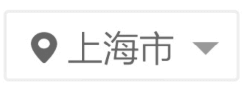
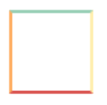
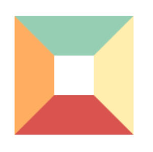
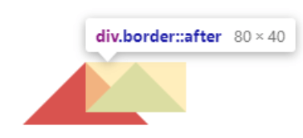
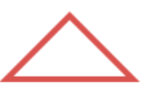
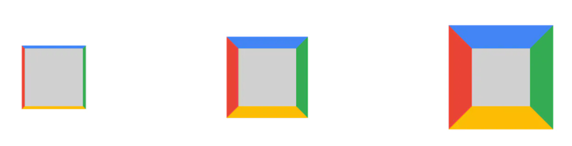
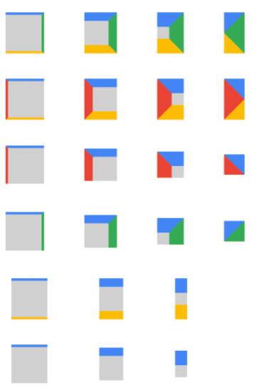

怎么使用 CSS 如何画一个三角形
参考答案
一、前言
在前端开发的时候，我们有时候会需要用到一个三角形的形状，比如地址选择或者播放器里面播放按钮

通常情况下，我们会使用图片或者svg去完成三角形效果图，但如果单纯使用css如何完成一个三角形呢？
实现过程似乎也并不困难，通过边框就可完成
二、实现过程
在以前也讲过盒子模型，默认情况下是一个矩形，实现也很简单
<style>
.border {
width: 50px;
height: 50px;
border: 2px solid;
border-color: #96ceb4 #ffeead #d9534f #ffad60;
}
</style>
<div class="border"></div>效果如下图所示：

将border设置50px，效果图如下所示：

白色区域则为width、height，这时候只需要你将白色区域部分宽高逐渐变小，最终变为0，则变成如下图所示：
这时候就已经能够看到4个不同颜色的三角形，如果需要下方三角形，只需要将上、左、右边框设置为0就可以得到下方的红色三角形

但这种方式，虽然视觉上是实现了三角形，但实际上，隐藏的部分任然占据部分高度，需要将上方的宽度去掉
最终实现代码如下：
.border {
width: 0;
height: 0;
border-style:solid;
border-width: 0 50px 50px;
border-color: transparent transparent #d9534f;
}如果想要实现一个只有边框是空心的三角形，由于这里不能再使用border属性，所以最直接的方法是利用伪类新建一个小一点的三角形定位上去
.border {
width: 0;
height: 0;
border-style:solid;
border-width: 0 50px 50px;
border-color: transparent transparent #d9534f;
position: relative;
}
.border:after{
content: '';
border-style:solid;
border-width: 0 40px 40px;
border-color: transparent transparent #96ceb4;
position: absolute;
top: 0;
left: 0;
}效果图如下所示：

伪类元素定位参照对象的内容区域宽高都为0，则内容区域即可以理解成中心一点，所以伪元素相对中心这点定位
将元素定位进行微调以及改变颜色，就能够完成下方效果图：

最终代码如下：
.border:after {
content: '';
border-style: solid;
border-width: 0 40px 40px;
border-color: transparent transparent #96ceb4;
position: absolute;
top: 6px;
left: -40px;
}三、原理分析
可以看到，边框是实现三角形的部分，边框实际上并不是一个直线，如果我们将四条边设置不同的颜色，将边框逐渐放大，可以得到每条边框都是一个梯形

当分别取消边框的时候，发现下面几种情况：
- 取消一条边的时候，与这条边相邻的两条边的接触部分会变成直的
- 当仅有邻边时， 两个边会变成对分的三角
- 当保留边没有其他接触时，极限情况所有东西都会消失

通过上图的变化规则，利用旋转、隐藏，以及设置内容宽高等属性，就能够实现其他类型的三角形
如设置直角三角形，如上图倒数第三行实现过程，我们就能知道整个实现原理
实现代码如下：
.box {
/* 内部大小 */
width: 0px;
height: 0px;
/* 边框大小 只设置两条边*/
border-top: #4285f4 solid;
border-right: transparent solid;
border-width: 85px;
/* 其他设置 */
margin: 50px;
}